◆「職階別Pick Up召喚(每日交替)」期間◆
期間:2018年3月29日(四) 17:00～4月12日(四) 11:59
以期間限定舉辦「職階別Pick Up召喚(每日交替)」！
職階別Pick Up召喚為以每日交替只召喚得到做為對象職階Servant的職階確定召喚。
※召喚對象也包含概念禮裝。
※請注意未包含做為期間限定對象的Servant及概念禮裝。
※透過各章進行追加的Servant於各章通過前也能入手。
※關於真名尚未判明的Servant，透過主線關卡的進行會讓Servant及一部份寶具的名稱變化。
詳情請在聖晶石召喚畫面左下的召喚詳細確認。
10次召喚中確定1張★4(SR)以上和確定1位★3(R)以上的Servant！
※確定★4(SR)以上包含Servant和概念禮裝。
| Pick Up職階 | 每日交替Pick Up期間 |
|---|---|
| Saber | 3月29日(四) 17:00～22:59 |
| 4月4日(三) 23:00～4月5日(四) 22:59 | |
| 4月11日(三) 23:00～4月12日(四) 11:59 | |
| Archer | 3月29日(四) 23:00～3月30日(五) 22:59 |
| 4月5日(四) 23:00～4月6日(五) 22:59 | |
| Lancer | 3月30日(五) 23:00～3月31日(六) 22:59 |
| 4月6日(五) 23:00～4月7日(六) 22:59 | |
| Rider | 3月31日(六) 23:00～4月1日(日) 22:59 |
| 4月7日(六) 23:00～4月8日(日) 22:59 | |
| Assassin+EXTRA | 4月1日(日) 23:00～4月2日(一) 22:59 |
| 4月8日(日) 23:00～4月9日(一) 22:59 | |
| Caster | 4月2日(一) 23:00～4月3日(二) 22:59 |
| 4月9日(一) 23:00～4月10日(二) 22:59 | |
| Berserker | 4月3日(二) 23:00～4月4日(三) 22:59 |
| 4月10日(二) 23:00～4月11日(三) 22:59 |
※請注意會以每日交替變更召喚對象職階。
◆Saber職階召喚對象Servant◆
※關於★4(SR)、★3(R)Servant也是只限Saber職階的召喚對象。
| 職階 | 稀有度 | Servant名 |
|---|---|---|
| Saber | ★★★★★ | 阿提拉 |
| ★★★★★ | 阿爾托莉亞・潘德拉剛 | |
| ★★★★★ | 莫德雷德 | |
| ★★★★ | 阿爾托莉亞・潘德拉剛〔Alter〕 | |
| ★★★★ | 高文 | |
| ★★★★ | 齊格飛 | |
| ★★★★ | 夏爾・德翁 | |
| ★★★★ | 鈴鹿御前 | |
| ★★★★ | 尼祿・克勞狄烏斯 | |
| ★★★★ | 柳生但馬守宗矩 | |
| ★★★★ | 羅摩 | |
| ★★★★ | 蘭斯洛特 | |
| ★★★ | 蓋烏斯・尤利烏斯・凱撒 | |
| ★★★ | 吉爾・德・雷 | |
| ★★★ | 弗格斯・馬克・羅伊 | |
| ★★★ | 貝德維爾 |
※Pick Up期間中，阿爾托莉亞・潘德拉剛〔Alter〕(Saber)、高文、尼祿・克勞狄烏斯(Saber)、柳生但馬守宗矩、貝德維爾於各章通過前也能入手。
◆Archer職階召喚對象Servant◆
※關於★4(SR)、★3(R)Servant也是只限Archer職階的召喚對象。
| 職階 | 稀有度 | Servant名 |
|---|---|---|
| Archer | ★★★★★ | 阿周那 |
| ★★★★★ | 俄里翁 | |
| ★★★★★ | 尼古拉・特斯拉 | |
| ★★★★ | Archer・地獄 | |
| ★★★★ | 阿塔蘭塔 | |
| ★★★★ | Emiya | |
| ★★★★ | Emiya〔Alter〕 | |
| ★★★★ | 崔斯坦 | |
| ★★★ | 尤瑞艾莉 | |
| ★★★ | 子吉爾 | |
| ★★★ | 大衛 | |
| ★★★ | 俵藤太 | |
| ★★★ | 比利小子 | |
| ★★★ | 羅賓漢 |
※Pick Up期間中，尼古拉・特斯拉、Emiya〔Alter〕、崔斯坦於各章通過前也能入手。
◆Lancer職階召喚對象Servant◆
※關於★4(SR)、★3(R)Servant也是只限Lancer職階的召喚對象。
| 職階 | 稀有度 | Servant名 |
|---|---|---|
| Lancer | ★★★★★ | 阿爾托莉亞・潘德拉剛 |
| ★★★★★ | 恩奇杜 | |
| ★★★★★ | 迦爾納 | |
| ★★★★ | 阿爾托莉亞・潘德拉剛〔Alter〕 | |
| ★★★★ | 弗拉德三世〔EXTRA〕 | |
| ★★★★ | 伊莉莎白・巴托里 | |
| ★★★★ | 哪吒 | |
| ★★★★ | 帕爾瓦蒂 | |
| ★★★★ | 芬恩・麥克庫爾 | |
| ★★★★ | 美杜莎 | |
| ★★★★ | 李書文 | |
| ★★★ | 庫・夫林 | |
| ★★★ | 庫・夫林〔Prototype〕 | |
| ★★★ | 豹人 | |
| ★★★ | 迪爾姆德・奧德利暗 | |
| ★★★ | 赫克特 | |
| ★★★ | 寶藏院胤舜 | |
| ★★★ | 羅慕路斯 |
※Pick Up期間中，阿爾托莉亞・潘德拉剛(Lancer)、阿爾托莉亞・潘德拉剛〔Alter〕(Lancer)、李書文、豹人於各章通過前也能入手。
◆Rider職階召喚對象Servant◆
※關於★4(SR)、★3(R)Servant也是只限Rider職階的召喚對象。
| 職階 | 稀有度 | Servant名 |
|---|---|---|
| Rider | ★★★★★ | 奧茲曼迪亞斯 |
| ★★★★★ | 魁札爾・科亞特爾 | |
| ★★★★★ | 女王梅芙 | |
| ★★★★★ | 弗朗西斯・德雷克 | |
| ★★★★ | 阿斯托爾福 | |
| ★★★★ | 安妮・伯妮＆瑪莉・瑞德 | |
| ★★★★ | 瑪莉・安東尼 | |
| ★★★★ | 瑪爾大 | |
| ★★★ | 亞歷山大 | |
| ★★★ | 牛若丸 | |
| ★★★ | 布狄卡 | |
| ★★★ | 美杜莎 | |
| ★★★ | 反抗軍的Rider |
※Pick Up期間中，魁札爾・科亞特爾、女王梅芙、反抗軍的Rider於各章通過前也能入手。
◆Assassin+EXTRA職階召喚對象Servant◆
※關於★4(SR)、★3(R)Servant也是只限Assassin+EXTRA職階的召喚對象。
| 職階 | 稀有度 | Servant名 |
|---|---|---|
| Assassin | ★★★★★ | 刑部姬 |
| ★★★★★ | 開膛手傑克 | |
| ★★★★ | Assassin・樂園 | |
| ★★★★ | Emiya〔Assassin〕 | |
| ★★★★ | 加藤段藏 | |
| ★★★★ | 卡米拉 | |
| ★★★★ | 新宿的Assassin | |
| ★★★★ | 絲西娜 | |
| ★★★★ | 不夜城的Assassin | |
| ★★★ | 荊軻 | |
| ★★★ | 靜謐的哈桑 | |
| ★★★ | 百貌的哈桑 | |
| ★★★ | 風魔小太郎 | |
| ★★★ | 亨利・傑基爾＆海德 | |
| Ruler | ★★★★★ | 貞德 |
| Avenger | ★★★★ | 戈爾貢 |
| ★★★★ | 新宿的Avenger |
※Pick Up期間中，加藤段藏、戈爾貢於各章通過前也能入手。
◆Caster職階召喚對象Servant◆
※關於★4(SR)、★3(R)Servant也是只限Caster職階的召喚對象。
| 職階 | 稀有度 | Servant名 |
|---|---|---|
| Caster | ★★★★★ | 玄奘三藏 |
| ★★★★★ | 諸葛孔明〔埃爾梅羅II世〕 | |
| ★★★★★ | 玉藻前 | |
| ★★★★★ | 不夜城的Caster | |
| ★★★★ | 海倫娜・布拉瓦茨基 | |
| ★★★★ | 俄刻阿諾斯的Caster | |
| ★★★★ | 吉爾伽美什 | |
| ★★★★ | 湯瑪斯・愛迪生 | |
| ★★★★ | 童謠 | |
| ★★★★ | 尼托克里絲 | |
| ★★★★ | 米德拉什的Caster | |
| ★★★★ | 美狄亞〔Lily〕 | |
| ★★★ | 馮・霍恩海姆・帕拉塞爾斯 | |
| ★★★ | 庫・夫林 | |
| ★★★ | 傑羅尼莫 | |
| ★★★ | 吉爾・德・雷 | |
| ★★★ | 查爾斯・巴貝奇 | |
| ★★★ | 美狄亞 | |
| ★★★ | 梅菲斯托費勒斯 |
※Pick Up期間中，湯瑪斯・愛迪生、米德拉什的Caster、美狄亞〔Lily〕、庫・夫林(Caster)、吉爾・德・雷(Caster)於各章通過前也能入手。
◆Berserker職階召喚對象Servant◆
※關於★4(SR)、★3(R)Servant也是只限Berserker職階的召喚對象。
| 職階 | 稀有度 | Servant名 |
|---|---|---|
| Berserker | ★★★★★ | 弗拉德三世 |
| ★★★★★ | 庫・夫林〔Alter〕 | |
| ★★★★★ | 南丁格爾 | |
| ★★★★ | 茨木童子 | |
| ★★★★ | 黃金國的Berserker | |
| ★★★★ | 玉藻貓 | |
| ★★★★ | 弗蘭肯斯坦 | |
| ★★★★ | 貝奧武夫 | |
| ★★★★ | 海克力斯 | |
| ★★★★ | 蘭斯洛特 | |
| ★★★ | 清姬 | |
| ★★★ | 大流士三世 | |
| ★★★ | 呂布奉先 |
※Pick Up期間中，庫・夫林〔Alter〕於各章通過前也能入手。

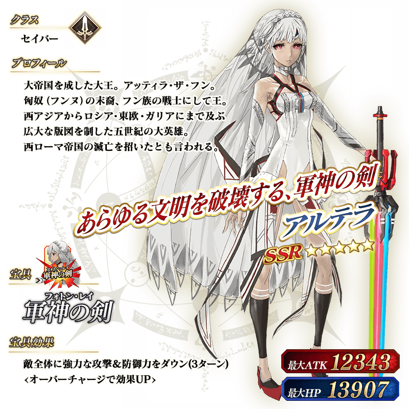

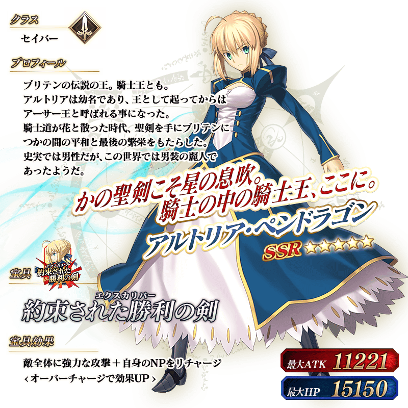


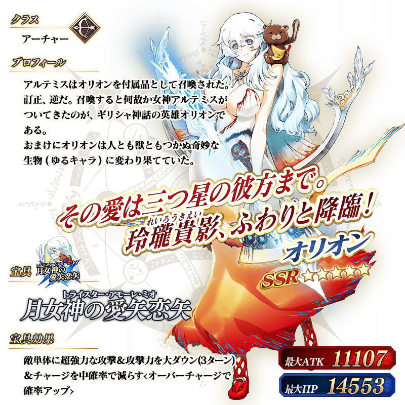
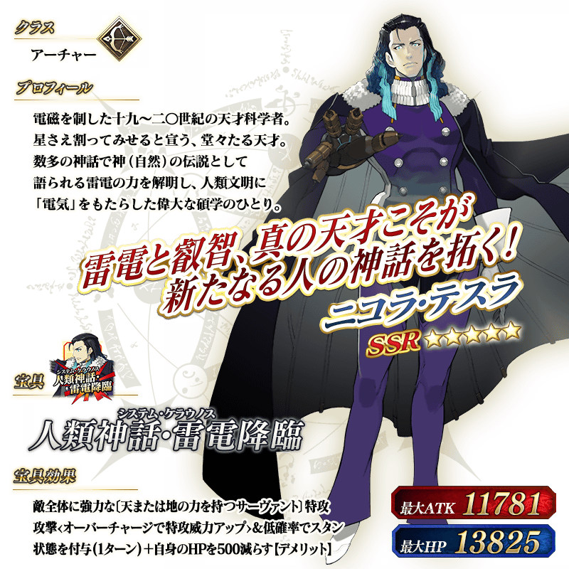

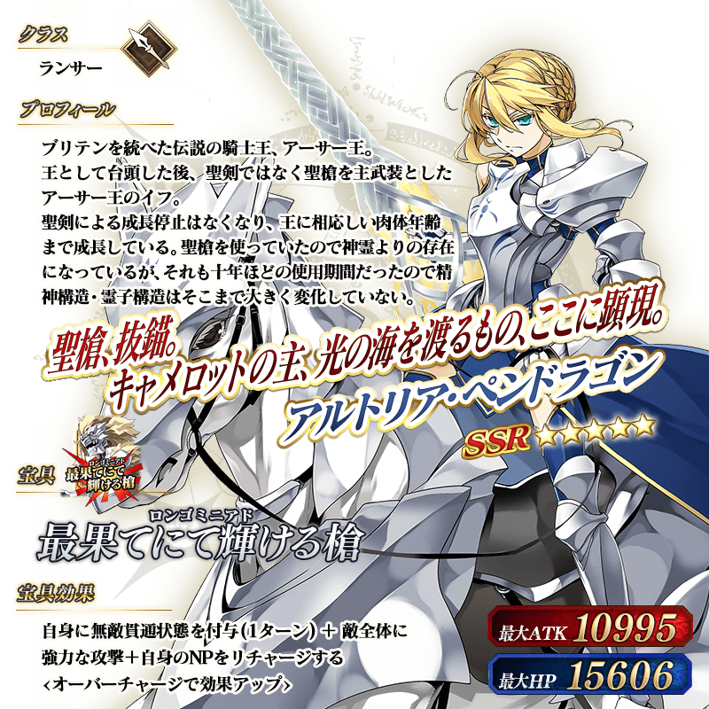


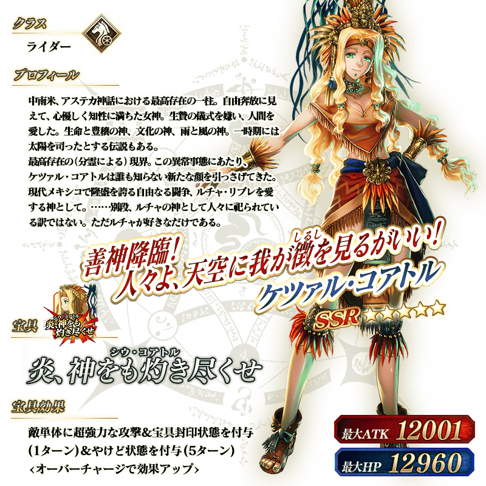

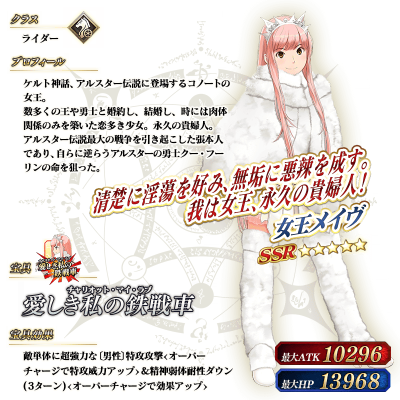

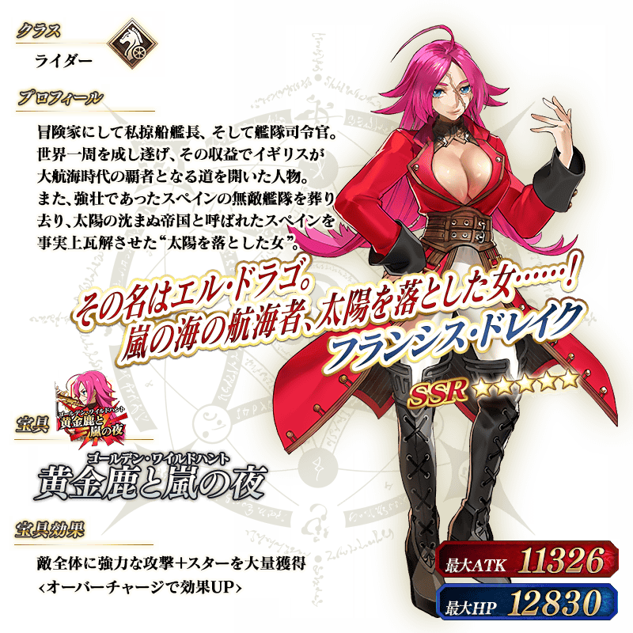
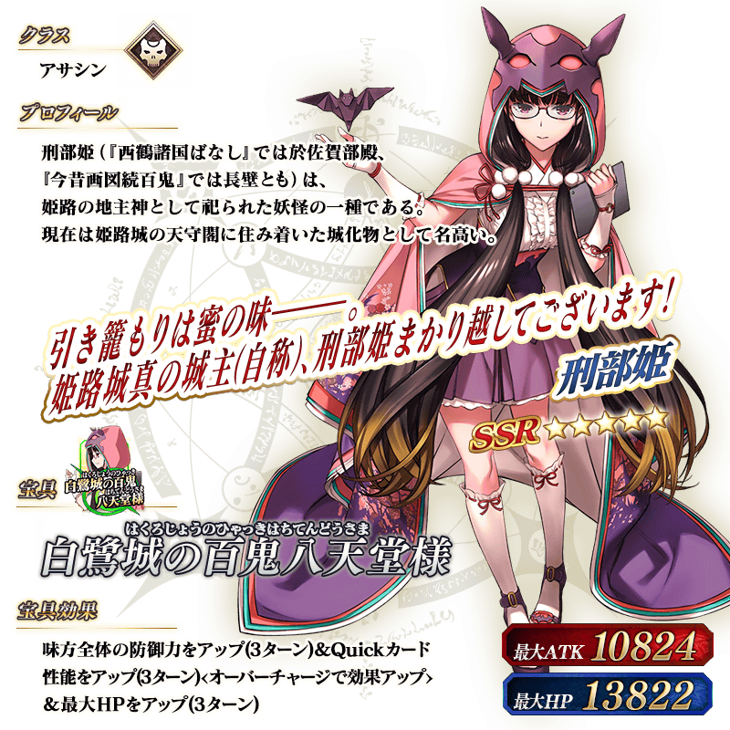

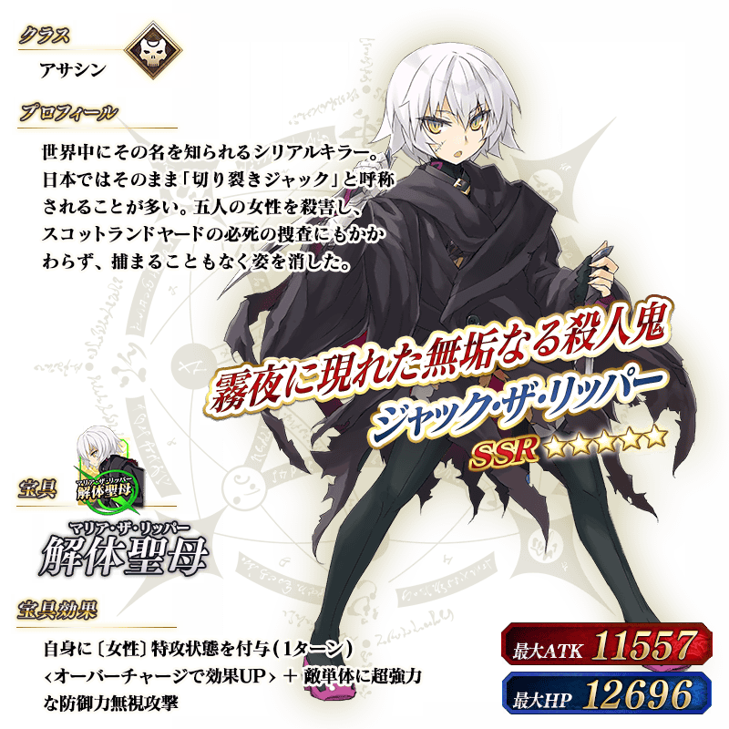
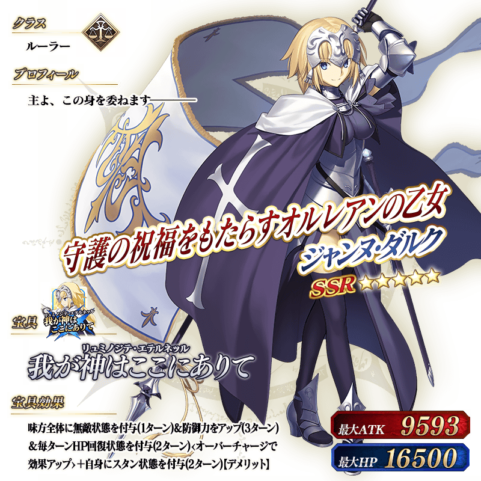

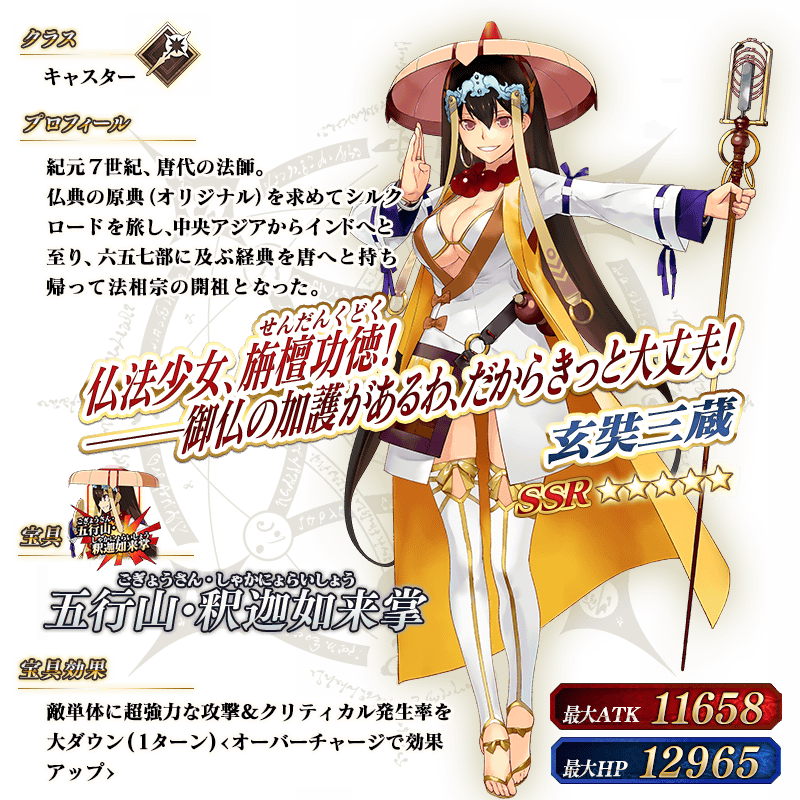


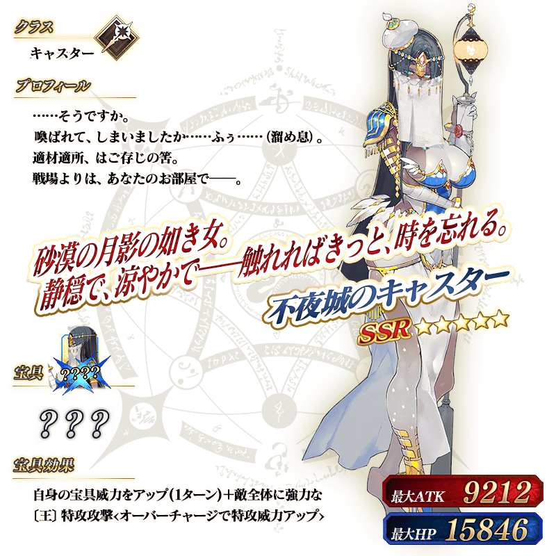

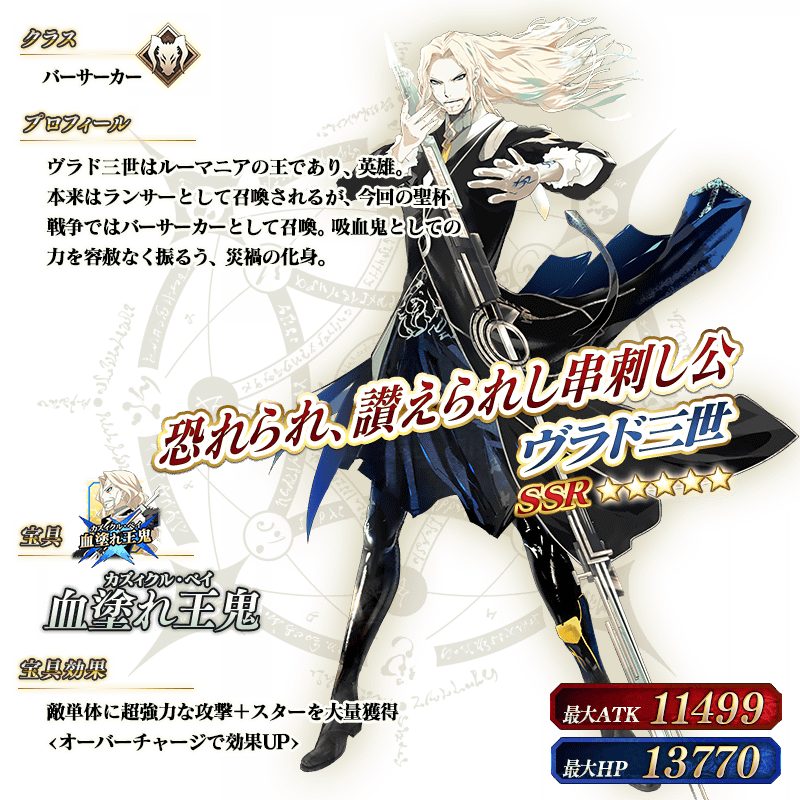